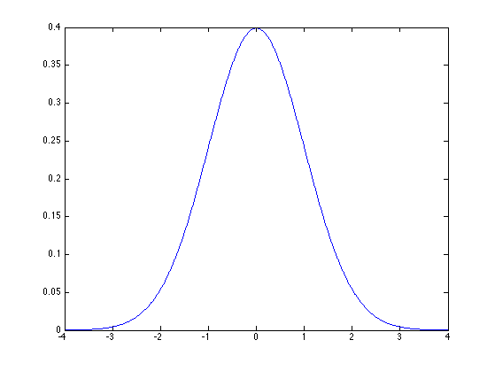
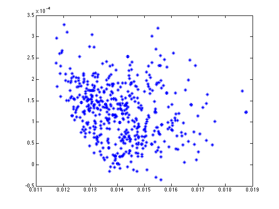

MATLAB Tutorial 3 - Mathieu ZARADZKI
Contents
QUESTION 1 - Gaussian distribution chart and integral
Using the plot function draw a chart of the gaussian distribution between -4 and 4
Using Matlab "integral" function compute the probability of X>2
Turn this into a function and compare with the "cdf" function
ANSWER to #1
Xs = [- 4 : 0.01 : 4];
Ys = normpdf(Xs, 0, 1);
plot(Xs, Ys);
myfun = @(x) normpdf(x, 0, 1);
probAbove2 = integral(myfun, 2, Inf)
probAboveX = @(X) integral(myfun, X, Inf);
probAboveX(2)
benchmark = 1 - normcdf(2, 0, 1)
probAbove2 =
0.0228
ans =
0.0228
benchmark =
0.0228

QUESTION 2 - Data manipulation
We saw how to load data from the internet and save it into a structure
Do this for 5 different stocks and form a matrix using their price log-return vectors
Also load the index and append it as a 6th column
ANSWER to #2
mcd = getstockdata('MCD');
intc = getstockdata('INTC');
jpm = getstockdata('JPM');
ko = getstockdata('KO');
msft = getstockdata('MSFT');
logreturns = [mcd.logreturns, intc.logreturns, jpm.logreturns, ko.logreturns, msft.logreturns];
QUESTION 3 - Counting occurences
Count how often at least one of the stocks lost (resp. gained) 2pct
Count how often at all of them lost (resp. gained) 2pct
TIP: you can do this without any loop
TIP: sorry to insist but no-loop please
TIP: try this command "[1 -2 4 2 5]>3"
ANSWER to #3
losstest = (logreturns <= -0.02);
losscount = sum(losstest');
losscount = losscount';
sum(losscount > 0)
sum(losscount == 5)
gaintest = (logreturns >= +0.02);
gaincount = sum(gaintest');
gaincount = gaincount';
sum(gaincount > 0)
sum(gaincount == 5)
ans =
576
ans =
22
ans =
614
ans =
14
QUESTION 4 - If Warren Buffet was broke ...
... he would probably it try all over again
Berkshire sold large Stock Index indices betting that ALL major indices
would perform well over the long run
How would you simulate the behaviour of your 5 stocks if you could only
simulate a number between 0 and NbObs (NbObs being the size of your sample)?
Could you then price Berkshire trade over 100 time steps?
TIP: you can use "randi([1 20])" to simulate integers between 1 and 20
QUESTION 5 - The portfolio universe
A portfolio is determined by its holding weights
Lets consider the universe of long only portfolio that are not
leveraged
We want to represent each of them of a chart of (x=std, y=mean) ...
... but there is an infinite number of them?
A large number will be enough for today e.g. 1000 portfolios
TIP: you can use "rand(5,1)" to simulate a set of 5 numbers from 0 to 1
ANSWER to #5
nbsimulations = 500;
means = zeros(nbsimulations, 1);
stds = zeros(nbsimulations, 1);
for i = 1 : nbsimulations
weights = rand(5, 1);
weights = weights / sum(weights);
portfoliologreturns = logreturns * weights;
means(i) = mean(portfoliologreturns);
stds(i) = std(portfoliologreturns);
end
plot(stds, means, '*b');

QUESTION 6 - Tracking the index
With the 5 stocks you selected, can you find a long only portfolio that
tracks the best the index?
Can you use a chart to see how it compares to other portfolios?
QUESTION 7 - Simulating a t-distribution
Matlab "rand" command returns (uniformly) a number between 0 and 1
Can you use this to simulate a t-distribution?
Please write a function for this
TIP: check out Matlab functions "tcdf" and "tinv"
ANSWER to #7
The key is to notice that tinv( rand ) will be a t-distribution!
This is because the tinv is the converse of tcdf.
And a CDF is a mapping from the distribution to the [0, 1] range.
randt = @(dof) tinv(rand(1,1), dof);
randt(10)
randt(10)
randt(10)
randt(10)
ans =
-0.1056
ans =
1.0715
ans =
0.0857
ans =
-1.5916
QUESTION 8 - A difficult question ... so difficult we postponed it from lesson 1
Lets assume that:
a) for 5 different stocks the previous "Alpha and Beta" equation holds, and that
b) for two different stocks the Epsilon' are independant from each other.
Can you use the different Beta' and Sigma' to build a "model" covariance matrix?
QUESTION 9 - Working as a Quant Analyst
In the case of a 2 stock portfolio allocation, can you optimize the
weights using a function maximization of the Sharpe ratio?
TIP: you can use "fminsearch" function